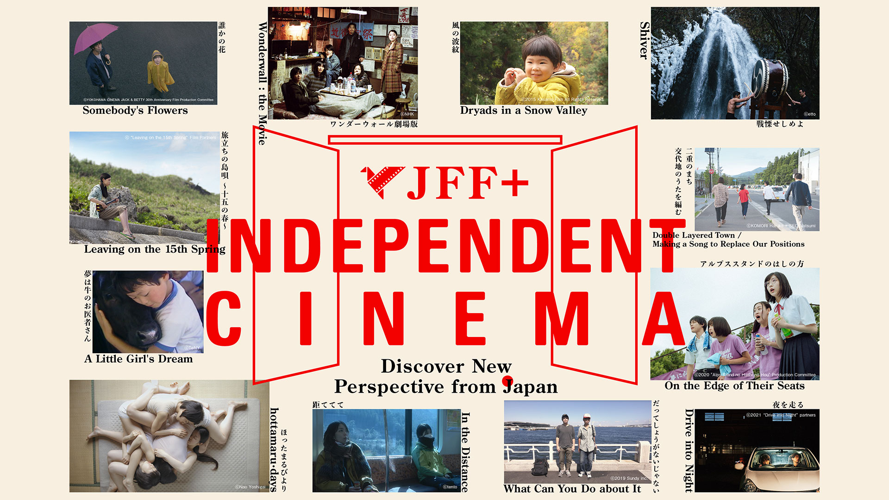

บทความนี้เผยแพร่เมื่อ 13 มีนาคม 2566

สัปดาห์นี้ เข้าสู่เฟสสองของ JFF+ INDEPENDENT CINEMA เทศกาลหนังญี่ปุ่นออนไลน์ที่ในครั้งนี้มาในธีมหนังอิสระที่ผู้จัดการโรงภาพยนตร์อิสระทั่วญี่ปุ่น หรือที่เขาเรียกว่า “มินิเธียเตอร์” สถานที่ซึ่งหล่อเลี้ยงวัฒนธรรมการชมภาพยนตร์ของชาวญี่ปุ่นมาอย่างยาวนานหยิบหนังมาแนะนำในครั้งนี้
"การมีอยู่ของมินิเธียเตอร์ในญี่ปุ่นส่งเสริมการดูหนังที่หลากหลายให้แก่ชาวญี่ปุ่น"
Tomomi KATSUTA นักคอลัมนิสต์ได้อธิบายการมีอยู่ของโรงภาพยนตร์เหล่านี้ในญี่ปุ่นโดยย้อนกลับไปที่จำนวนผู้ชมและอัตราการฉายหนังภายในเกาะ โดยในทศวรรษที่ผ่านมา หนังแต่ละเรื่องจะเข้าฉายในญี่ปุ่นมากกว่าพันเรื่อง สัดส่วนที่มากขนาดนี้แต่มีหนังญี่ปุ่นในแต่ละปีราว 600 เรื่องออกฉาย รวมไปถึงการอนุมัติโปรเจคต์ เงินทุนอยู่เรื่อยๆ และมีจำนวนจอฉายในประเทศประมาณ 3,600 จอฉาย
Eurospace มินิเธียเตอร์ที่ตั้งอยู่ในชิบูย่า โตเกียวนั้น ก็นับเป็นโรงภาพยนตร์ที่สร้างความหลากหลายให้กับผู้ชมและก่อร่างสร้างตัววัฒนธรรมการดูหนังที่หลากหลายขึ้นมา อันเนื่องมาจากมีหนังที่ฉายเฉพาะโรงเหล่านี้ถึง 40% (แถมโรงยังคอยช่วยอีก) นอกจากสองอย่างที่กล่าวมาข้างต้นแล้ว ยังได้ประโยชน์ทั้งสตูดิโอรายเล็ก คนทำหนังรายย่อย อุตสาหกรรมภาพยนตร์เชิงพาณิชย์ และสร้างความหลากหลายของหนังญี่ปุ่นได้อีก อีกทั้งโรงยังเชิญผู้กำกับอย่าง Leos Carax, Abbas Kiarostami
 มินิเธียเตอร์เหล่านี้เกิดขึ้นในช่วงยุค 70s ช่วงที่อุตสาหกรรมหนังญี่ปุ่นตกตํ่าลง เมเจอร์สตูดิโอก็ลดจำนวนหนังที่ผลิตลง ส่งผลกระทบเป็นลูกโซ่ให้แก่ทีมงานและผู้กำกับ จุดนั้นเองทำให้เกิดหนังอิสระมากขึ้น มินิเธียเตอร์ก็เข้ามาโอบรับหนังเหล่านี้ หนังที่เมเจอร์สตูดิโอเหล่านั้นมองว่ามัน “ยากและลึก (ในหลายๆ ความหมาย)” เกินไปจนถูกรีเจคต์ ไม่ได้สร้าง และเกิดขึ้นตามเมืองต่างๆ เช่น Nagoya Cinematheque และ Cinema Clair ในเมือง Okayama หรือ Cinema Square Tokyo ในชินจูกุ
มินิเธียเตอร์เหล่านี้เกิดขึ้นในช่วงยุค 70s ช่วงที่อุตสาหกรรมหนังญี่ปุ่นตกตํ่าลง เมเจอร์สตูดิโอก็ลดจำนวนหนังที่ผลิตลง ส่งผลกระทบเป็นลูกโซ่ให้แก่ทีมงานและผู้กำกับ จุดนั้นเองทำให้เกิดหนังอิสระมากขึ้น มินิเธียเตอร์ก็เข้ามาโอบรับหนังเหล่านี้ หนังที่เมเจอร์สตูดิโอเหล่านั้นมองว่ามัน “ยากและลึก (ในหลายๆ ความหมาย)” เกินไปจนถูกรีเจคต์ ไม่ได้สร้าง และเกิดขึ้นตามเมืองต่างๆ เช่น Nagoya Cinematheque และ Cinema Clair ในเมือง Okayama หรือ Cinema Square Tokyo ในชินจูกุ
สู่ยุคสมัยใหม่ อุตสาหกรรมภาพยนตร์ญี่ปุ่นเปลี่ยนแปลงไป ฟิล์มสู่ดิจิทัล โรงภาพยนตร์มินิเธียเตอร์หลายแห่งก็ตายจาก มัลติเพล็กซ์ได้รับความนิยม มินิเธียเตอร์อาจจะมีพื้นที่สัดส่วนน้อยลงจากการที่บริษัทยักษ์ใหญ่กินส่วนแบ่งไป ความนิยมของ genre หนังบางประเภทก็ลดลงไป แต่ด้วยสมัยที่แปรเปลี่ยน กล้องก็พัฒนา งบประมาณที่ใช้ลดลงก็เป็นส่วนหนึ่งที่ทำให้ภาพยนตร์อิสระมีจำนวนมากขึ้น ไม่ว่าจะเป็น 8000 Miles / SR: Saitama's Rapper (2009) ของ Yu Irie ที่นอกจากหนังจะประสบความสำเร็จจนได้ทำภาคต่อในปีถัดมา ยังได้สร้างเป็นละครเล่า 10 ปีต่อมาในชื่อ SR Saitama no Rappa Maiku no Hosomichi ฉายทางช่อง TV Tokyo ทั้งยังช่วยส่งให้อิริเอะให้ไปกำกับหนังในเมเจอร์สตูดิโออย่าง Confession of Murder, AI Amok ยังไม่นับกับ Nemesis ที่ฮิตจนได้ทำเดอะมูฟวี่ ฉายสิ้นเดือนนี้ที่ญี่ปุ่นอีกต่างหาก